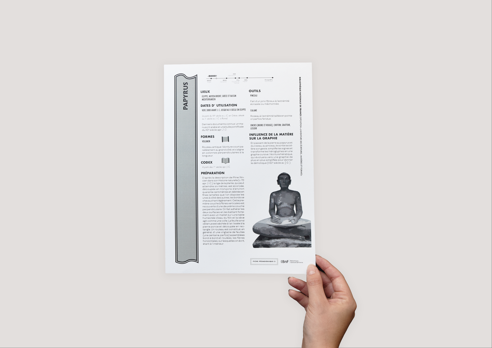
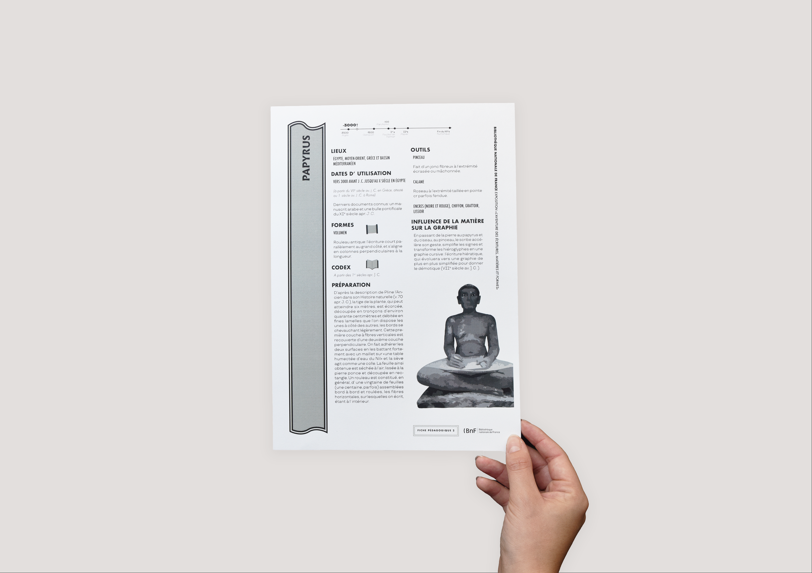

Fiches pédagigiques
Pour optimiser le fonctionnement des fiches pédagogiques “l’aventure des écritures, matières et formes” de la Bibliothèque Nationale de France sur un modèle de collection, j’ai déssiné une forme qui s’articule pour identifier d’emblée chaque titre et ainsi reconfiguré les thèmes.
 
